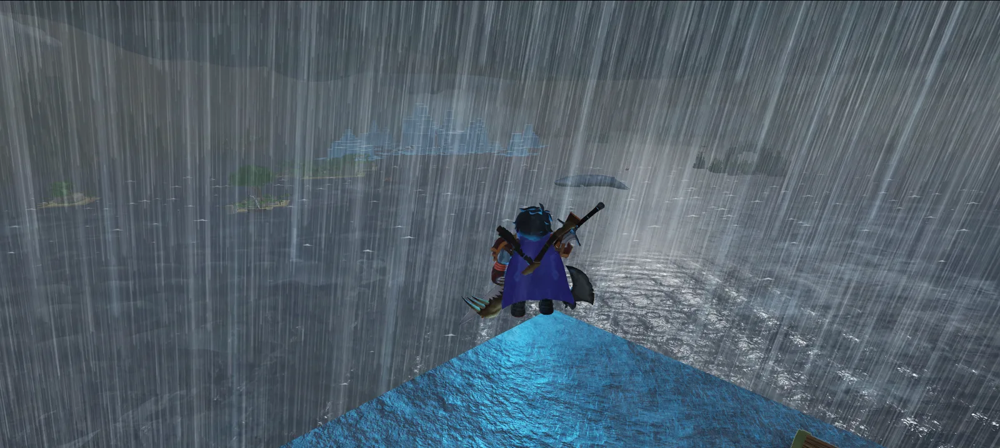
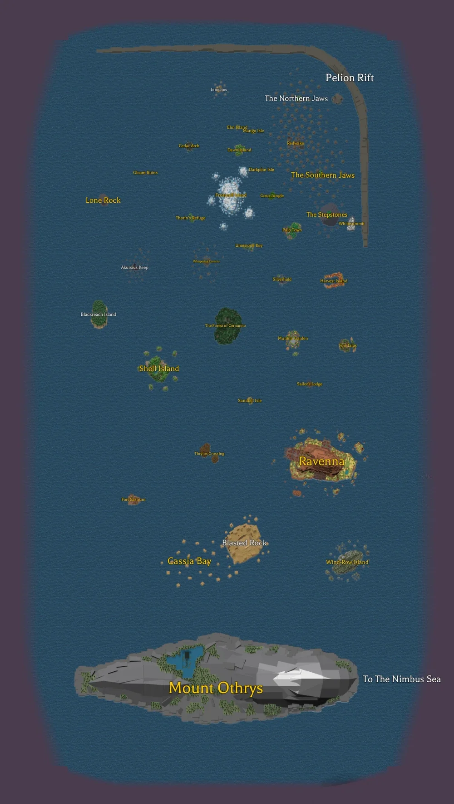
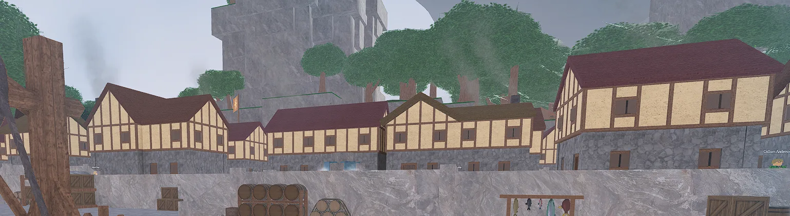
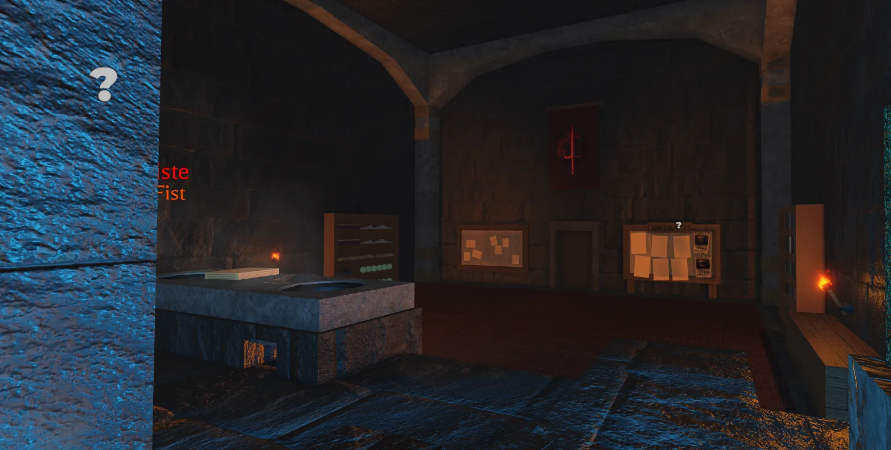
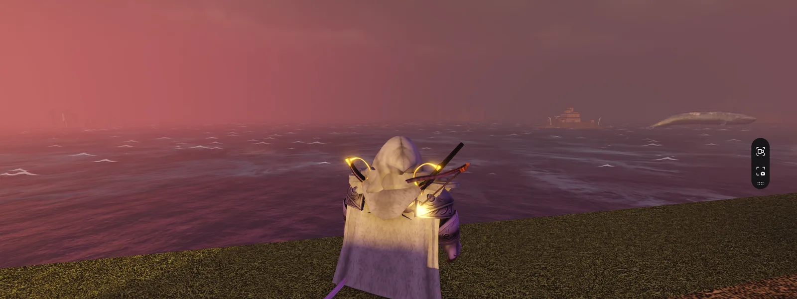

BroncoCTF 2026 · Open Source Intelligence
BroncoCTF: AO-SINT
An evidence-first OSINT writeup using topography, architecture, map geometry, and sightlines to identify four Arcane Odyssey locations from four screenshots.
Team idktheflag placed 8th of 753 teams at BroncoCTF 2026.
Challenge overview
AO-SINT provided four screenshots from the Roblox game Arcane Odyssey: two from the Bronze Sea and two from the Nimbus Sea. The objective was to identify the island where the player character was actually standing in each screenshot.
Flag format: bronco{location1_location2_location3_location4}
The challenge is talking about the place where the character is, not what they are looking at. This may be the same place in some cases.
That distinction defined the entire solve. Several screenshots prominently displayed distant islands, unusual weather, or visual glitches. Those details were often distractions rather than reliable evidence of the character's location.
Final result
- 01 Ierochos
- 02 Port Mistral
- 03 Makrinaos
- 04 Ravenna
Spoiler: show the final flag
bronco{ierochos_portmistral_makrinaos_ravenna}Methodology
I approached each screenshot as a geolocation problem rather than a landmark-recognition problem, and separated the evidence into two ranks.
Primary evidence
- Terrain directly beneath the character
- Elevation
- Cliff and rock geometry
- Architecture
- Interior layout
- Vegetation
- Nearby landmasses
- Landmark order
- Relative landmark size
- Map direction
- In-game viewpoint reproduction
Supporting evidence
Weather, lighting, story clues, visual effects, physics behavior, and distant landmarks. Supporting evidence could strengthen a theory, but it was never reliable enough to establish a location by itself.
Location analysis
01 Ierochos

Observation. The player stood at a high elevation on a narrow rocky pillar. Several islands were visible in the distance, including a large frozen landmass that appeared to be Frostmill Island. The most visually prominent island was not necessarily the answer.
False lead. Heavy rain initially suggested Dawn Island because Dawn Island is associated with a permanent thunderstorm. That theory was weak because severe weather can occur in other parts of the game.
Evidence. The character stood at very high elevation on a narrow, steep rock formation, multiple islands appeared along the same sightline, and the order and apparent sizes of those islands could be compared against the Bronze Sea map.

ierochos
Key takeaway. The frozen island dominated the screenshot, but Frostmill Island was only a distant reference point. The topography beneath the character and the multi-island sightline identified Ierochos as the standing location.
02 Port Mistral

Observation. The second screenshot showed a developed merchant settlement: timber-framed buildings with light plaster walls and red-brown roofs, barrels and cargo crates, market equipment, waterfront infrastructure, and tall vegetated stone formations.
False lead. The architecture initially resembled Redwake, an early-game settlement in the Bronze Sea. However, this screenshot belonged to the Nimbus Sea set, which made Redwake an architectural comparison rather than a valid answer.
Evidence. The settlement's dense harbor layout, merchant structures, docks, cargo, cranes, and red-roofed buildings closely matched Port Mistral, and the intact appearance was consistent with visiting before the storyline events that alter the settlement.
portmistral
Key takeaway. Architectural style alone created ambiguity because multiple settlements shared design elements. Identifying the correct sea narrowed the candidate set.
03 Makrinaos

Observation. The third screenshot showed the interior of an Assassin Syndicate facility: a red banner, a contract board, dark stone walls, wooden construction, weapons and supplies, and a facility built inside mountainous terrain.
False lead. The room resembled the Red Corner inside Whitesummit, making Whitesummit a strong initial candidate. However, the screenshot belonged to the Nimbus Sea set.
Evidence. Makrinaos contains the Dead Halls, the Assassin Syndicate's Nimbus Sea base. The challenge referenced a miniboss hidden inside somewhere, which appeared to match Architect Kalliste, and the tornado references align with the Veiling Storms.
makrinaos
Key takeaway. The room's appearance alone could have indicated Whitesummit. The sea classification and miniboss clue were necessary to distinguish the two facilities.
04 Ravenna

Observation. The fourth screenshot contained strong red lighting, reduced visibility, distant structures and terrain, and a whale apparently flying through the air.
False lead. The flying whale initially suggested a hallucination associated with Akursius Keep, which is connected to Insanity effects. The theory was ultimately unreliable.
Evidence. Flying whales can occur as a physics glitch, and lighting effects are not unique to one island, so the analysis focused on terrain beneath the character, nearby structures, general landform, and settlement geometry.
ravenna
Key takeaway. The whale was memorable but geographically useless. The correct answer came from the terrain and structures around the character.
Sightline reconstruction
The approximate sightline from the standing position:
Ierochos → Cedar Arch → Elm Island → Dawn Island → Frostmill Island
I later reproduced the viewpoint in-game and compared the elevation, foreground pillar, landmark order, and relative size of the visible islands. The verification screenshot is omitted to avoid publishing account-identifying information. The challenge was designed to be solvable without downloading Roblox.
Lessons learned
- 01 Identify the camera position, not the landmark
- The most important question was what terrain is directly beneath the character, and from which location the visible landmarks would align in this order.
- 02 Topography is more reliable than weather
- Elevation, cliff shape, rock geometry, vegetation, architecture, nearby landmasses, and sightline direction outrank weather and lighting.
- 03 Physics glitches are usually noise
- Unusual game behavior can be memorable without being useful. A clue should not gain weight merely because it looks strange.
- 04 Separate verified components from guesses
- Assigning each location a confidence level prevents a partially correct flag from turning into uncontrolled brute force.
The full flag is behind the spoiler under Final result above.